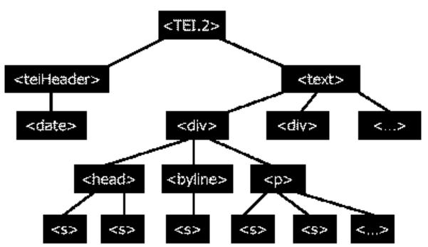
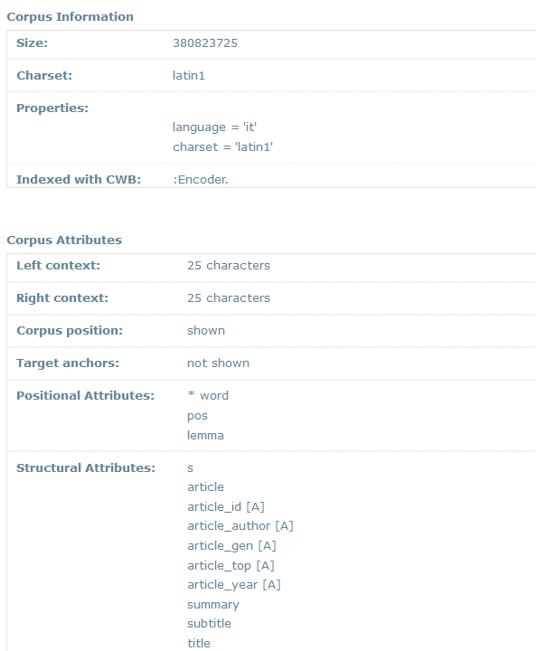
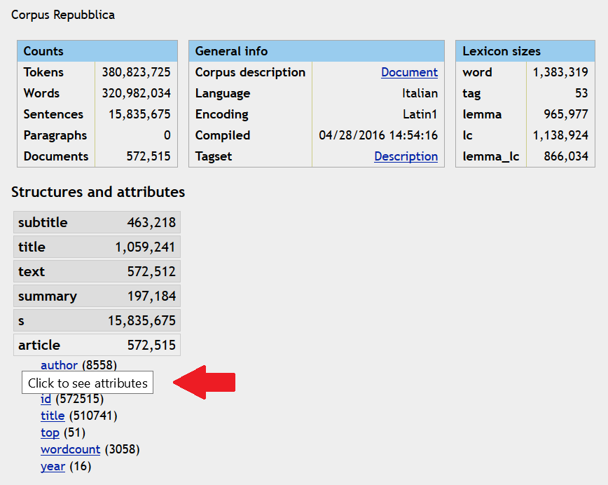
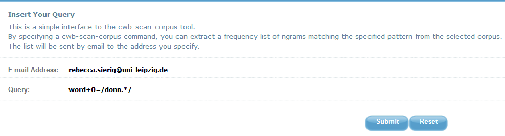
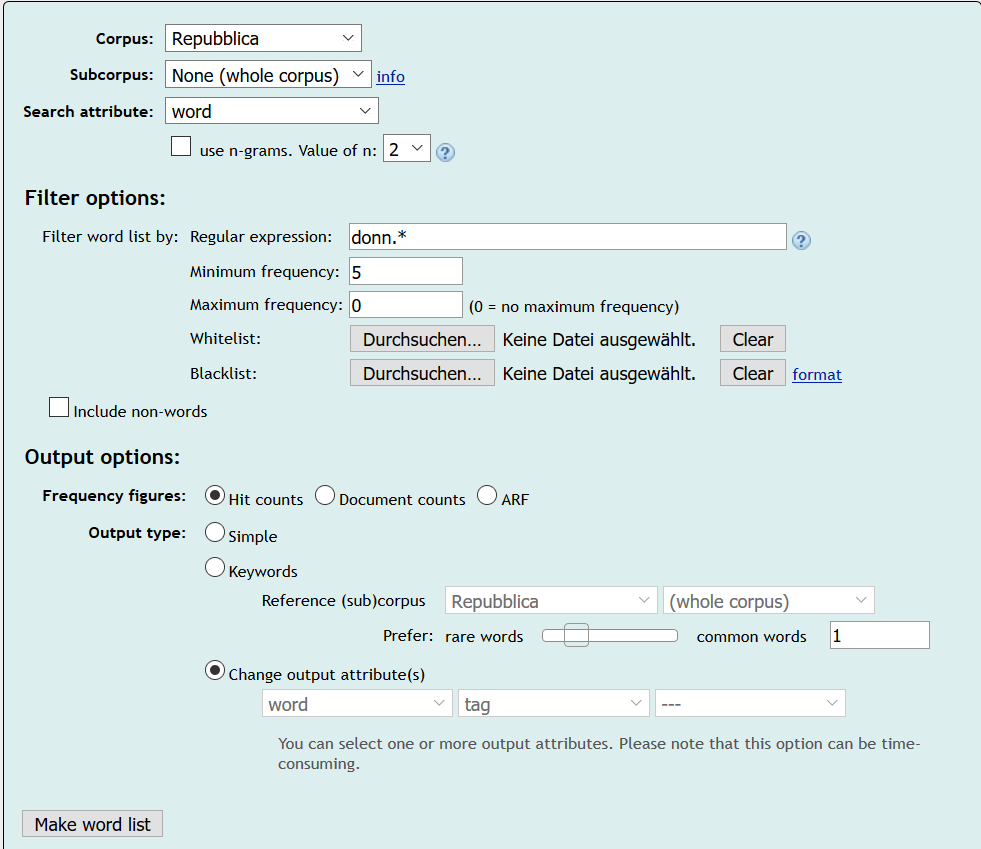
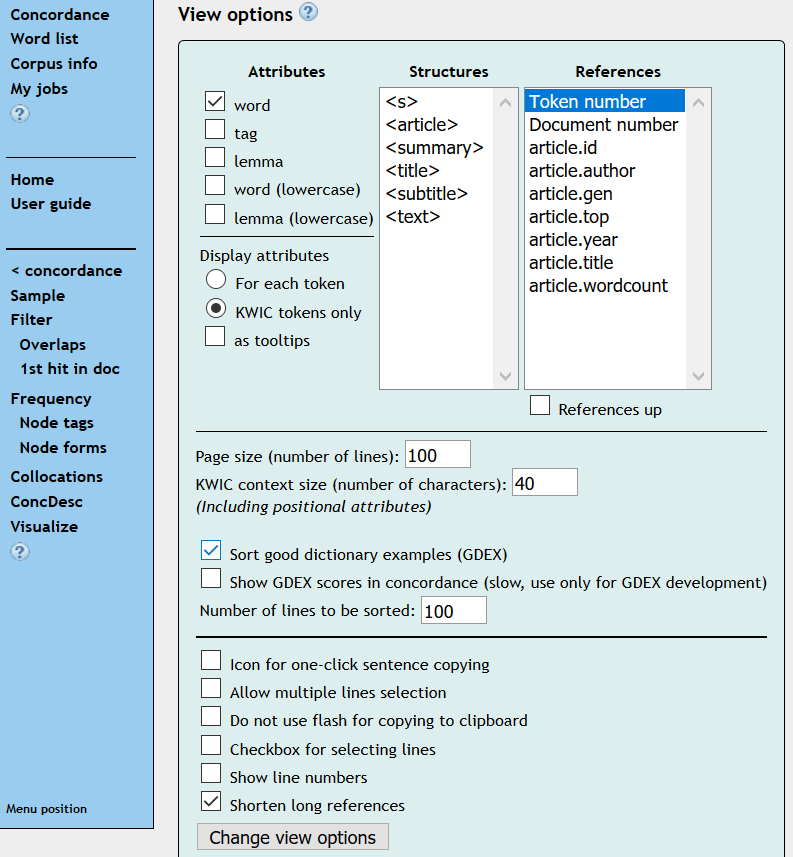
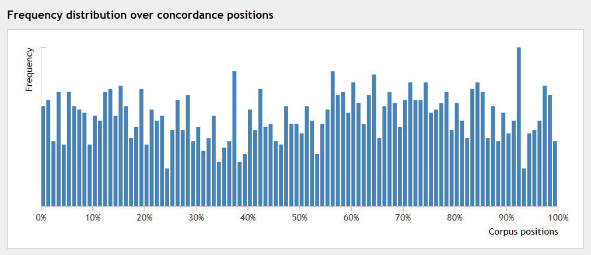

«La Repubblica» Corpus
Table of Contents
Abstract
This paper reviews a huge resource of contemporary Italian newspaper language, the «La Repubblica» corpus. The corpus contains articles, which appeared in the Italian daily newspaper La Repubblica during the years 1985 to 2000 and counts more than 380 million tokens. Apart from being tokenized, it is also PoS-tagged, enriched with TEI-conformant structural mark-up as well as categorized with respect to topics and genres. The data and their preparation are addressed in the first part of this paper while its second part deals with access to the corpus. When the review was written, there were two possible ways of accessing the corpus: either by the ‘old’ interface directly hosted by the Institute of Translational Studies at the University of Bologna (SSLMIT) or by the ‘new’ one hosted by a NoSketch Engine. Both ways are compared in order to point out the changes.
Besprechung
Aus dem Bedürfnis nach authentischen italienischen Sprachdaten für ÜbersetzerInnen ist in den Jahren von 2001 bis 2004 das «La Repubblica»-Korpus am Institut für Translatologie der Universität Bologna (Scuola Superiore di Lingue Moderne per Interpreti e Traduttori, kurz: SSLMIT) entstanden, so beschreiben es Guy Aston und Lorenzo Piccioni. Als das «La Repubblica»-Korpus erstellt wurde, verfügten andere Sprachen bereits über große Referenzkorpora, während es im Italienischen nichts Vergleichbares gab (cf. Aston / Piccioni 2003). Um diese Lücke zu schließen, wurde im Jahr 2001 mit der Erstellung des «La Repubblica»-Korpus begonnen, das in dieser Rezension beleuchtet werden soll.
Mittlerweile existieren zwar einige Korpora italienischer Gegenwartssprache,1 seine Größe und Aufbereitung sowie der ausgedehnte Erhebungszeitraum lassen das «La Repubblica»-Korpus aber auch knapp 13 Jahre nach seiner Fertigstellung noch attraktiv für verschiedene Nutzungsinteressen (s.u.) erscheinen. Im Folgenden sollen zunächst (1) Umfang, (2) Daten, (3) Markup und (4) inhaltliche bzw. linguistische Annotation des Korpus beschrieben werden, ehe auf dessen Nutzungsmöglichkeiten durch verschiedene Interfaces eingegangen wird.
Umfang. Mit insgesamt 380 Millionen Tokens ist das «La Repubblica»-Korpus knapp dreimal so groß wie das British National Corpus (Bodleian Libraries (University of Oxford) on behalf of the BNC Consortium 2007) mit ca. 100 Millionen Tokens oder das italienische Referenzkorpus CORIS/CODIS (Rossini Favretti, Rema et al. 1998-2017), das ca. 130 Millionen Tokens umfasst und noch in den Kinderschuhen steckte, als das «La Repubblica»-Korpus konzipiert wurde (cf. Aston / Piccioni 2007).
Daten. Das Korpus basiert auf Texten, die im Zeitraum von 1985 bis 2000 in der italienischen Tageszeitung «La Repubblica» erschienen sind, einer der meist gelesenen Tageszeitungen Italiens (cf. Baroni, Bernardi, Comastri et al. 2004: 1771).2 Allerdings waren es keine gedruckten Zeitungsausgaben, die als unmittelbare Datengrundlage fungierten, sondern 16 CD-ROMs, die von «La Repubblica» erstellt und vertrieben wurden. Jede CD-ROM enthielt Aston und Piccioni (2003) zufolge eine Datenbank mit den Artikeln und zugehörigen Metadaten der «La Repubblica»-Ausgaben eines gesamten Jahres. Bilder und Tabellen bzw. andere Verzeichnisse waren in der Datenbank ebenso wenig präsent wie Werbung oder Beilagen (cf. Aston / Piccioni 2003). Bei der Erstellung des Korpus wurden die Texte und verfügbaren Metadaten zunächst von den CD-ROMs extrahiert und als ASCII-Dateien gespeichert. Bei der Extraktion musste berücksichtigt werden, dass die Kodierung der Daten bei manchen CD-ROMs variierte (cf. Aston / Piccioni 2003). Nach der Extraktion wurden die Texte zunächst normalisiert, um das Korpus mittels Corpus Workbench 3 zu indizieren. Normalisiert wurden nach Angaben von Aston und Piccioni (2003) u.a. Akzente („perché“ versus „perchè“ versus „perche'“), wobei die Variante mit nachgestelltem Apostroph zugunsten einer am Standarditalienischen orientierten Akzentuierung im Wort („perché“) aufgegeben wurde. Weiterhin wurden Sonderzeichen (z.B. Apostroph, Anführungszeichen) durch Entitätsreferenzen (z.B. &apos für den Apostroph) ersetzt.
<teiHeader>) und
Textkörper (<text>) besteht. Letzterer wurde weiter untergliedert
in <div>-Elemente, die die einzelnen Artikel einer Zeitungsausgabe
beinhalten. Die Artikelstruktur gliedert sich wiederum in verschiedene, teilweise
fakultative Elemente: Überschriften (<head>), Byline
(<byline>) und Absatz (<p>), wobei der
Absatz noch einmal in Sätze unterteilt wurde. Die Entscheidung, den Textkörper eines
jeden Artikels in nur einem Absatz wiederzugeben, war Aston und Piccioni (2003)
zufolge der Beschaffenheit der Rohdaten geschuldet, denn den Datenbanken waren (außer
den Überschriften) keine Informationen über die Strukturierung eines Artikels zu
entnehmen. Die Untergliederung eines Artikels in Sätze (<s>)
konnte ebenfalls nicht unmittelbar aus den Rohdaten extrahiert werden, sondern
bedurfte einer nachträglichen Segmentierung (cf. Aston / Piccioni 2003). Verfügbare
Metadaten zu den einzelnen Artikeln wurden in den Attributen der
<div>-Tags festgehalten, etwa die zugehörige Seitenzahl, die
Textsorte oder das Thema des Artikels.5 Nach
Bernardi, Baroni, Comastri und anderen (2004: 1771) besitzen nicht nur die jeweiligen
Dokumente, in denen die Daten einer Zeitungsausgabe eingespeist wurden, einen Header,
sondern das Korpus insgesamt. Der Header für das gesamte Korpus enthält dabei
Metainformationen, die das Korpus als Ganzes betreffen, etwa editorische Prinzipien
oder Urheberrechtsbeschränkungen. Für Korpus-NutzerInnen einsehbar ist der Header
nach meinem bisherigen Erkenntnisstand (12.07.2017) nicht.
Inhaltliche bzw. linguistische Annotation. Das Korpus wurde aber nicht nur mit strukturellen Metadaten angereichert, sondern auch mit inhaltlichen und linguistischen Annotationen. Es ist mit PoS-Tags annotiert (cf. Baroni / Bernardi / Comastri et al. 2004: 1772), wobei eine reduzierte und modifizierte Form des EAGLES-Tagsets6 verwendet wurde. Das Tagset wurde zunächst auf ein Subkorpus bestehend aus 180 zufällig ausgewählten Artikeln angewendet. Dieses automatisch annotierte und manuell kontrollierte Subkorpus erfüllte zwei Funktionen: zum einen wurde es verwendet, um zu eruieren, welche Tagger bzw. Kombinationen von Taggern die verlässlichsten Ergebnisse produzieren würden und diente sozusagen als Kontrollkorpus; zum anderen diente es als Trainingskorpus für diejenige Kombination von Taggern, die sich mit einer durchschnittlichen Genauigkeit7 von 95,46 % als verlässlichste erwiesen hat. Mit dieser verlässlichsten Kombination wurde dann der Rest des Korpus automatisch annotiert. Für KorpusnutzerInnen ist nicht ersichtlich, welche Teile des Korpus manuell bearbeitet wurden und welche ausschließlich durch automatisierte Prozesse. Im Zuge einer weiteren inhaltlichen / linguistischen Annotation wurden die Zeitungsartikel nach Texttyp (Genre) und Thema kategorisiert (cf. Baroni / Bernardi / Comastri et al. 2004: 1772). Auch dies geschah zunächst manuell anhand von 15.000 Artikeln, ehe eine Support Vector Machine (SVMLight), mit einer Genauigkeit von 90,3% (cf. Baroni / Bernardi / Comastri et al. 2004: 1773) auf den Rest des Korpus angewendet wurde. Es werden nach Angaben der AutorInnen insgesamt zwei Texttypen (news-report und comment) sowie 10 Themen (u.a. culture und economics) unterschieden.8 Dass das Korpus auch lemmatisiert wurde, ist u.a. der Online-Beschreibung des Korpus (cf. DIT 24.05.2017) zu entnehmen. Daraus geht hervor, dass die einzelnen Tokens mit Hilfe von Morph-It! 9 annotiert wurden.
Ein solches PoS-annotiertes, lemmatisiertes und in Bezug auf Texttyp und Thema kategorisiertes Zeitungskorpus (cf. SSLMIT Dev Online 2004b) kann vielfältige Erkenntnisinteressen befriedigen, auch wenn es auf nur einer Quelle, «La Repubblica», basiert. Guy Astone und Lorenzo Piccione (2003) nennen neben der Nutzung in didaktischen Kontexten auch diachrone und synchrone Forschungsmöglichkeiten und insbesondere die Untersuchung kontrastiver Fragestellungen. Bereits genutzt wurde das Korpus beispielsweise von Lorenza Pescia für die Untersuchung sexistischen Sprachgebrauchs in der Presse Italiens und der Schweiz (cf. Pescia 2010). Vorstellbar wären auch Untersuchungen zum Italiano neo-standard 10, da Zeitungen nach Ansicht von Massimo Cerruti, Claudia Crocco und Stefania Marzo (2017: 9) besonders empfänglich für diese Variante des Italienischen sind. Um derartige Untersuchungen durchführen zu können, bedarf es des – idealiter freien – Zugangs zu Zeitungskorpora des Italienischen.
Das «La Repubblica»-Korpus ist zumindest frei durchsuchbar, kann aber auf Grund von Urheberrechts- und Nutzungsvereinbarungen mit «La Repubblica» nicht gänzlich eingesehen werden (cf. Baroni / Bernardini / Comastri et al. 2004: 1773). Um es zu durchsuchen bieten sich momentan (Stand: 11.07.2017) sogar zwei Möglichkeiten, denn die Rezension ist zu einem Zeitpunkt entstanden, als das Korpus im Begriff war, von einem Interface auf ein anderes umzuziehen, nämlich (A) vom Portal SSLMIT Online (2004a) auf (B) das Dipintra-Portal (CoLiTec: o.J.), das auf NoSketch Engine 11 basiert. Gerade für NutzerInnen der bisherigen Oberfläche A kann ein Vergleich der beiden Zugriffsmöglichkeiten hilfreich sein, um zu erfahren, welche Funktionen auf der neuen Oberfläche B wie umgesetzt wurden, welche Funktionen entfallen und welche neu hinzukommen. Zudem wird durch einen Vergleich ersichtlich, welche Vorteile der Umzug auf ein neues Portal in diesem Fall mit sich bringt. Deshalb sollen die beiden Oberflächen (kurz: A und B) einander unter Berücksichtigung folgender Punkte gegenübergestellt werden: (1) Nutzungsbedingungen, (2) Dokumentation, (3) Suchoptionen, (4) Ergebnisanzeige, (5) Ergebnisverarbeitung und (6) Hilfestellungen.
Nutzungsbedingungen. Für die Nutzung von A ist eine Registrierung erforderlich, die zügig und automatisiert funktioniert. Das per E-Mail zugesandte Passwort lässt sich allerdings nicht ändern. B kann ohne vorherige Anmeldung genutzt werden.
Dokumentation. Beide Oberflächen informieren mittels Überblicksseiten über das Korpus (Umfang, Daten, Markup, Annotationen) und verweisen auf ein Dokument mit veralteten weiterführenden Informationen, nämlich den Artikel von Baroni, Silvia Bernardini, Federica Comastri und anderen (2004). Tatsächlich findet sich keine aktuellere Beschreibung des Korpus, obwohl es sich in der Zwischenzeit, etwa hinsichtlich der Zuordnung von Themen zu Artikeln (vgl. Fußnote 8), verändert hat. Informationen über die Normalisierung der Daten finden sich verteilt auf verschiedene Artikel (Baroni / Bernardini / Comastri et al. 2004; Aston / Piccioni 2003) und sind nicht unmittelbar auf den Oberflächen einsehbar. Sie sind allerdings nicht unwichtig für manche Forschungsinteressen: Wie Aston und Piccioni (06.05.2003) anmerken, kann beispielsweise die Richtung des Wortakzentes („perché“ versus „perchè“) auf sozio-geografische Variation zurückgeführt werden. Durch eine Normalisierung bzw. Standardisierung der Akzentsetzung sind Untersuchungen einer solchen Variation mit dem «La Repubblica»-Korpus nicht möglich.
Eine weitere an keiner Stelle (Stand: 11.07.2017) dokumentierte Veränderung ist die Einbindung von Subkorpora in die Oberfläche B. Die Suche kann dort beschränkt werden auf Subkorpora wie „GelareRepubblica“, „VER:fin“ oder „c“, deren Komposition nicht selbsterklärend ist und über die bisher nur bekannt gegeben wird, wie viele Tokens sie umfassen.
 <article>). Den Hinweis, dass zusätzliche Klicks
erforderlich sind, bekommen NutzerInnen erst, wenn sie mit dem Cursor über die
Elemente fahren. Welche PoS-Tags verwendet wurden, lässt sich dagegen auf den
Übersichtsseiten beider Oberflächen klarer erschließen: A verweist auf einen Link zum
Tagset, während B das Tagset in der Korpus-Information (cf. DIT 24.05.2017)
unmittelbar anzeigt. Einblick in den TEI-Header des gesamten Korpus könnte zu einer
zuverlässigeren und aktuelleren Dokumentation beitragen.
 
Statt auf das gesamte Korpus kann die Suche bei B auch nur auf Subkorpora bezogen werden. Zudem kann nicht nur nach Wortformen, sondern auch nach Lemmata, Tags und sogar nach Werten zu oben genannten Attributen gesucht werden, was bei A zwar ebenfalls möglich ist, aber erst durch komplexere CQP-Formulierungen. Filtermöglichkeiten bei B bestehen zum einen bezüglich der Häufigkeit, mit der Suchobjekte im Korpus auftreten sollen, um in der Wortliste berücksichtigt zu werden; zum anderen können anhand von White- / und Blacklists Listen bestimmter Suchobjekte berücksichtigt werden, die bei der Suche ein- oder ausgeschlossen werden sollen. Ein Beispiel für eine Blacklist zur oben genannten Suchabfrage ist ein Textdokument, das die Wortformen „donna“ und „donne“ enthält. Diese beiden Wortformen würden in der Wortliste nicht berücksichtigt werden.
Für die Konkordanzabfrage bieten beide Oberflächen sowohl einen einfachen (simple) als auch einen oder mehrere fortgeschrittene Suchtypen an. Bei A bedeutet ‚simple‘, dass für die Suche eine Abfragemaske verwendet wird, während die fortgeschrittene Suche vollständig auf der Verwendung von CQP basiert. Bei Interface B sind alle Suchtypen mit einer Suchmaske verknüpft, die verschiedene Filter- und Ausgabeoptionen bereithält. Dort bedeutet ‚simple‘, dass anhand der Eingabe versucht wird, festzustellen, ob die Suche auf ein Lemma, eine Wortform oder eine Phrase abzielt (cf. Lexical Computing CZ s.r.o. 2017b). Alternativen zur einfachen Suche sind bei B die gezielte Suche nach Lemmata, Phrasen, Wortformen, Zeichen oder eine Suche mit Hilfe der Abfragesprache CQL.

Die Einschränkungsmöglichkeit der Suche auf bestimmte Genres (Kommentar / News) oder Jahre ist gleich geblieben. Bei B kann die Suche nicht nur auf Themen, sondern auch auf Subthemen beschränkt werden. B bietet zusätzlich die Möglichkeit, die Suche auf ein Subkorpus oder / und auf Artikel mit einer bestimmten ID, von bestimmten AutorInnen, mit einer bestimmten Länge oder mit einem bestimmten Titel zu beschränken. Da die Benennungsprinzipien der IDs nicht selbsterklärend sind und auch nicht erklärt werden, stellt sich allerdings die Frage, wie die Suche nach Artikeln mit einer speziellen ID sinnvoll eingesetzt werden kann. Im Gegensatz zu B ermöglicht A, Diakritika zu berücksichtigen bzw. zu ignorieren. Zudem ist es bei B nicht mehr möglich, die Trefferzahl im Vorfeld zu begrenzen. Nach Durchführung einer Suchanfrage ist es aber weiterhin möglich, andere Anzeigeoptionen (u.a. Treffer pro Seite / Sortierung) einzustellen.

Während sich die Informationen zu den einzelnen Treffern bei A in der Angabe der Korpusposition erschöpfen, können bei B nun Metadaten zu den zugehörigen Artikeln und ein erweiterter sprachlicher Kontext angezeigt werden. Eine randomisierte Darstellung der Suchergebnisse kann bei A bereits vor der Suche angefordert werden. Dies ist bei B erst nach Durchführung der Suche möglich und gehört damit bereits zum nächsten Punkt, der Ergebnisverarbeitung.
Ergebnisverarbeitung. Bei A können lediglich Suchhistorien gespeichert und Wortlisten als Textdateien per E-Mail zugesandt werden. B bietet erneut deutlich mehr Möglichkeiten der Ergebnisverarbeitung und –sicherung: Die Treffer können nach verschiedenen Kriterien sortiert und gefiltert werden. Auch können Samples aus (reproduzierbar) zufällig ausgewählten Treffern erstellt werden. Sogar ganze Subkorpora sind erstell- und als XML- oder TXT-Datei speicherbar.

Hilfestellungen. Während die Hilfsseiten bei A problemlos gelesen werden können, funktionieren die Links bei B derzeit (Stand: 12.07.2017) nicht. Die Seiten lassen sich aber über die Homepage von Sketch Engine relativ leicht selbst finden. Das „User manual“ (cf. Lexical Computing CZ s.r.o 2017c) bietet eine verständliche Einführung in die Funktionen und zugrundeliegenden Statistiken von Sketch Engine. Das dort erworbene Wissen kann dann auf die NoSketch Engine-Oberfläche des «La Repubblica»-Korpus übertragen werden.
Fazit
Zusammenfassend zeigt der Vergleich, dass Oberfläche B über mehr, vielfältigere und komplexere Optionen der Suche, Anzeige und Verarbeitung der Daten des «La Repubblica»-Korpus verfügt, die stärker über Eingabemasken angewählt werden können und nicht notwendig die Kenntnis einer Abfragesprache erfordern. Um Oberfläche B aber voll nutzen zu können, sollten Korpusdokumentation und die Links zu entsprechenden Hilfsseiten aktualisiert werden.
Wer das «La Repubblica»-Korpus über die neue Oberfläche ansteuert, kann sich auch weiterhin auf die Möglichkeit zur Erschließung unentgeltlich nutzbarer authentischer italienischer Sprachdaten beachtlichen Ausmaßes einstellen; sei es zu Zwecken der automatischen Sprachverarbeitung, für kontrastive Untersuchungen, für Übersetzungen, in didaktischen Kontexten oder für linguistische Forschungsinteressen. Die Annotation der Rohdaten des Korpus mit linguistischen (PoS-Tags), inhaltlichen (Thema und Texttyp) und strukturellen Informationen legen zusammen mit der Lemmatisierung den Grundstein für eine Vielzahl unterschiedlichster Korpusabfragen, die mittels Weboberfläche(n) realisiert werden können.
Bibliography
- Aston, Guy, and Lorenzo Piccioni. 2003. "Un grande corpus di italiano giornalistico." Guy Aston. Pagina personale/Personal page. Last modified May 6, 2003. Accessed April 5, 2017. http://www.sslmit.unibo.it/~guy/aitla_repubblica.htm.
- Audipress. 2017. "Scenario Quotidiani." Last modified May 30, 2017. Accessed July 10, 2017. http://audipress.it/audipress-sito-2017/wp-content/uploads/2017/05/Dati-Audip-2017_I_invio_completo.xlsx.
- Baroni, Marco, Silvia Bernardini, Fedrica Comastri, Lorenzo Piccioni, Alessandra Volpi, Guy Aston, and Marco Mazzoleni. 2004. "Introducing the «La Repubblica» Corpus: A Large, Annotated, TEI(XML-) Compliant Corpus of Newspaper Italian" In Proceedings of LREC 2004, 1771–1774. https://web.archive.org/web/20170912102519/http://clic.cimec.unitn.it/marco/publications/lrec2004/rep_lrec_2004.pdf.
- Berruto, Gaetano. 1987. Sociolinguistica dell'Italiano contemporaneo (= Studi Superiori NIS 33). Roma: NIS.
- Blasco Ferrer, Eduardo. 1994. Handbuch der italienischen Sprachwissenschaft (= Grundlagen der Romanistik 16). Berlin: Erich Schmidt.
- Bodleian Libraries (University of Oxford) on behalf of the BNC Consortium. 2007. The British National Corpus, version 3. Accessed July 10, 2017. http://www.natcorp.ox.ac.uk/.
- Bubenhofer, Noah. 2006-2015. "Die Arbeit mit der IMS Open Corpus Workbench am Beispiel des Text+Berg-Korpus." In Einführung in die Korpuslinguistik. Praktische Grundlagen und Werkzeuge. https://web.archive.org/web/20170912103227/http://www.bubenhofer.com/korpuslinguistik/kurs/index.php?id=cwb_start.html.
- Cerruti, Massimo, Claudia Crocco, and Stefania Marzo. 2017. "On the development of a new standard norm in Italian." In Towards a New Standard. Theoretical and Empirical Studies on the Restandardization of Italian (= Language and Social Life 6), edited by Cerruti, Massimo, Claudia Crocco, and Stefania Marzo, 3–28. Boston / Berlin: de Gruyter.
- CoLiTec. N.d. Corpora Dipintra. Bologna: Università di Bologna. https://web.archive.org/web/20170912103703/https://corpora.dipintra.it/public/run.cgi/first_form.
- DIT (Dipartimento Interpretazione e Traduzione). 2017. "Repubblica." Documentation Wiki. Last modified May 24, 2017. Bologna: Università di Bologna. https://web.archive.org/web/20170912104442/http://docs.sslmit.unibo.it/doku.php?id=corpora:repubblica.
- EAGLES. 2014. "EAGLES. Expert Advisory Group on Language Engineering Standards." Last modified June 24, 2014. https://web.archive.org/web/20170912104707/http://www.echo.lu/langeng/en/lre1/eagles.html.
- Kilgarriff, Adam, Miloš Husák, Katy McAdam, et al. 2008. "GDEX: Automatically finding good dictionary examples in a corpus" In Proceedings of the 13th EURALEX International Congress, 425–432. Spain, July 2008.
- Lexical Computing CZ s.r.o. 2017a. "NoSketch Engine and Sketch Engine. What is the difference?" In Sketch Engine, edited by Lexical Computing CZ s.r.o. https://web.archive.org/web/20170912105438/https://www.sketchengine.co.uk/nosketch-engine/.
- Lexical Computing CZ s.r.o. 2017b. "How to generate a concordance?" In Sketch Engine, edited by Lexical Computing CZ s.r.o. https://web.archive.org/web/20170912105707/https://www.sketchengine.co.uk/user-guide/user-manual/concordance-introduction/concordance-search/.
- Lexical Computing CZ s.r.o. 2017c. "User manual." In Sketch Engine, edited by Lexical Computing CZ s.r.o. https://web.archive.org/web/20170912105844/https://www.sketchengine.co.uk/user-guide/user-manual/.
- Pescia, Lorenza. 2010. "Il maschile e il femminile nella stampa scritta del Cantone Ticino (Svizzera) e dell’Italia" In Che genere di lingua? Sessismo e potere discriminatorio delle parole, edited by Maria Serena Sapegno, 57–74. Carocci: Roma.
- Rossini Favretti, Rema et al. 1998-2017. CORIS/CODIS. A corpus of written Italian based on a defined and a dynamic model. Bologna: FICLIT / Università di Bologna. https://web.archive.org/web/20170912110322/http://corpora.dslo.unibo.it/coris_eng.html.
- SSLMIT Dev Online. 2004a. „La Repubblica“ Corpus. Corpus Information. Bologna: Università di Bologna. https://web.archive.org/web/20170912110839/http://dev.sslmit.unibo.it/corpora/corpus.php?path=&name=Repubblica.
- SSLMIT Dev Online. 2004b. „La Repubblica“ Corpus. Corpus Description. Bologna: Università di Bologna. https://web.archive.org/web/20170912110927/http://dev.sslmit.unibo.it/corpora/corpus.php?path=&name=Repubblica&action=information.
- SSLMIT Dev Online. 2004c. Frequency Lists How-to (Repubblica). Bologna: Università di Bologna. https://web.archive.org/web/20170912111024/http://dev.sslmit.unibo.it/corpora/frequency_how-to.php?path=&name=Repubblica.
- SSLMIT Dev Online. 2009. Morph-It! Version 0.48 (2009-02-23). Bologna: Università di Bologna. https://web.archive.org/web/20170912111107/http://dev.sslmit.unibo.it/linguistics/morph-it.php.
- TEI Consortium, ed. 2015. TEI P5: Guidelines for Electronic Text Encoding and Interchange. Last modified October 4, 2015. https://web.archive.org/web/20170912111141/http://www.tei-c.org/Guidelines/P5/.
Notes
- Neben dem Korpus CORIS/CODIS (Rossini Favretti, Rema et al. 1998-2017) beispielsweise das Perugia Corpus CEP (cf. Spina 2014) oder das Projekt CLIPS (cf. Sobrero 2007). ↑
- Wie zum Zeitpunkt der Korpuserstellung (cf. Baroni / Bernardi / Comastri et al. 2004: 1771) rangiert La Repubblica auch aktuell knapp hinter dem Corriere della Sera auf Platz 2 der meistgelesenen allgemeinen Tageszeitungen (diese Aussage basiert auf Daten von Audipress (2017, letzter Zugriff: 10.07.2017). ↑
- Noah Bubenhofer (2006-2015) beschreibt die Corpus Workbench als „Konkordanz- und Korpusanalyse-Software, mit der eigene Korpora, die mit linguistischen Annotationen versehen sind, bearbeitet werden können“. ↑
- Gemeint sind die TEI Guidelines for Electronic Text Encoding and Interchange (TEI Consortium 04.10.2015), die mittlerweile als Version P5 verfügbar sind. ↑
- Aston und Piccioni (06.05.2003) erwähnen nicht alle oben genannten Attribute, aber die übrigen, article.top und article.gen, lassen sich anhand der Korpus-Informationen auf dem NoSketch Engine Interface (CoLiTec: o.J.) erschließen. ↑
- Das Akronym EAGLES steht für Expert Advisory Group on Language Engineering Standards, eine Initiative der Europäischen Kommission, die zum Ziel hatte, De-facto-Standards unter anderem für die Erstellung, Beschreibung und Repräsentation von großen Sprachressourcen zu etablieren (cf. EAGLES 24.06.2014). ↑
- Hier ist das arithmetische Mittel gemeint. Angaben zur Streuung wurden nicht gemacht. ↑
- Anhand der Korpus-Informationen auf dem NoSketch Engine Interface (CoLiTec: o.J.) ist ersichtlich, dass die Themen in der Zwischenzeit noch weiter differenziert wurden, Politik etwa u.a. in Schulpolitik und Sportpolitik. ↑
- Morph-It! ist ein frei nutzbares „lexicon of inflected forms with their lemma and morphological features“ (cf. SSLMIT Dev Online 2009), das ebenfalls an der Universität Bologna, und zwar von Marco Baroni und Eros Zanchetta entwickelt wurde und Lemmatizern als Datengrundlage dienen kann. ↑
- Der Begriff "neo-standard" geht auf Gaetano Berruto (1987: 62) zurück und bezeichnet mit den Worten Eduardo Blasco-Ferrers (1994: 217) eine "Ist-Norm" des Italienischen, die sich u.a. durch den Sprachgebrauch in verschiedenen Arten von Massenmedien entwickelt hat und sich immer stärker im öffentlichen Sprachgebrauch manifestiert. Sie steht in Kontrast zu einer "Soll-Norm", auf die sich etwa Italienisch-Lehrwerke oder präskriptive Grammatiken berufen (haben). ↑
- NoSketch Engine ist die „open source version of Sketch Engine with certain functionality limitations“ (Lexical Computing CZ s.r.o. 2017a). Sketch Engine wiederum ist eine Software zum Korpusmanagement und zur Korpusabfrage. ↑
- Das automatische Erkennen von GDEX ist eine Besonderheit von Sketch Engine. Für weitere Informationen bezüglich GEDX siehe Kilgarriff, Husák, Mc Adam und andere (2008). ↑
@article{larepubblica,
author = {Sierig, Rebecca},
title = {«La Repubblica» Corpus},
journal = {RIDE – A review journal for digital editions and resources},
number = {6},
year = {2017},
doi = {10.18716/ride.a.6.9},
url = {https://doi.org/10.18716/ride.a.6.9},
}TY - JOUR
AU - Sierig, Rebecca
TI - «La Repubblica» Corpus
T2 - RIDE – A review journal for digital editions and resources
IS - 6
PY - 2017
DA - 2017/09
DO - 10.18716/ride.a.6.9
UR - https://doi.org/10.18716/ride.a.6.9
PB - Institut für Dokumentologie und Editorik e.V.
LA - de
ER - Sierig, R. (2017). «La Repubblica» Corpus. RIDE – A review journal for digital editions and resources, (6). https://doi.org/10.18716/ride.a.6.9Sierig, Rebecca. "«La Repubblica» Corpus." RIDE – A review journal for digital editions and resources, no. 6, 2017. https://doi.org/10.18716/ride.a.6.9.Sierig, Rebecca. "«La Repubblica» Corpus." RIDE – A review journal for digital editions and resources, no. 6 (2017). https://doi.org/10.18716/ride.a.6.9.